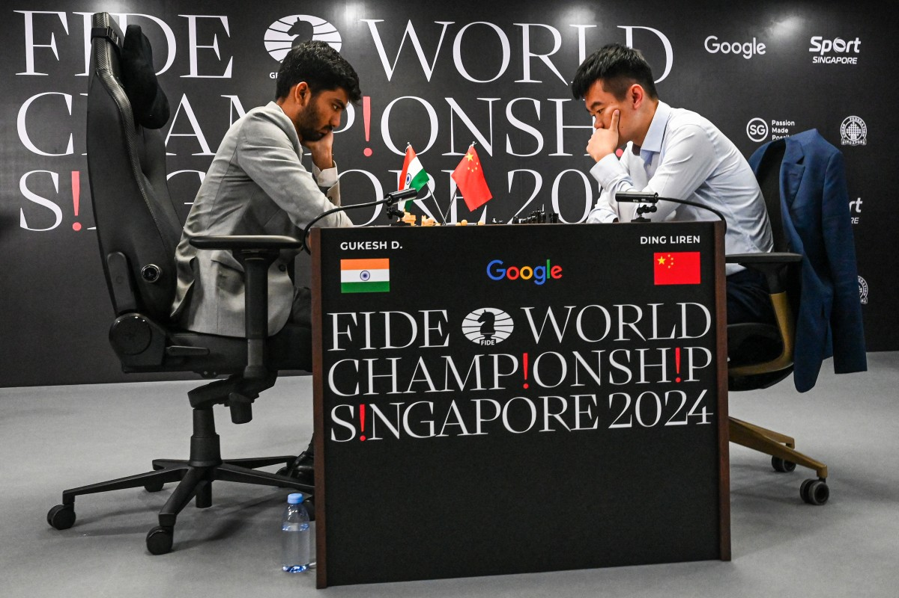
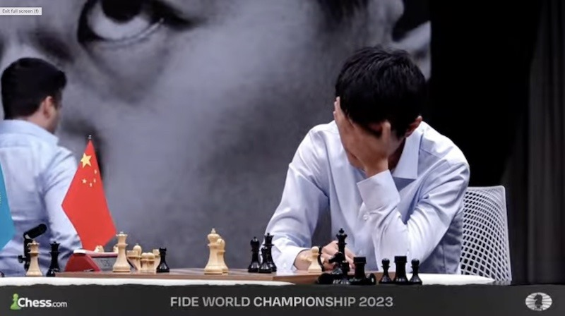
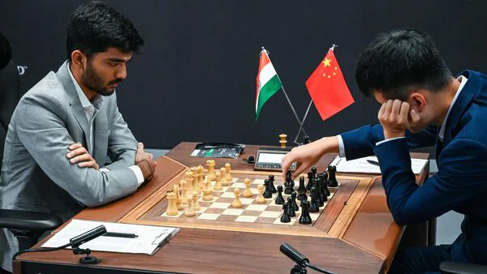

2024 Satranç Dünya Şampiyonluğu Maçları Bugün Sona Erdi
Bu yılki Dünya Satranç Şampiyonası sürprizlere sahne oluyor. 2023 yılından bu yana Dünya Şampiyonu apoletini elinde bulunduran Ding Liren, ünvan maçına ilk defa çıkmaya hak kazanan ve henüz 18 yaşında olan Gukesh Dommaraju karşısında ünvanını korumak için boy gösteriyor. İşte şampiyonanın detayları;
2024 yılı Dünya Şampiyonası bu sene Singapur'da düzenleniyor. 2023 yılı adaylar turnuvasında herkesi şaşırtarak Ian Nepomniachtchi, Fabiano Caruana, Hikaru Nakamura ve daha pek çok yıldızın önünde turnuvayı lider tamamlayan Gukesh D, Dünya Şampiyonluğu maçına çıkmaya hak kazanmıştı. Henüz 18 yaşında olan oyuncu, adaylar turnuvasını kazanan en genç sporcu olarak satranç tarihine geçti. Bu özel başarının ardından asıl hedef olan Dünya Şampiyonluğunu için Singapur'da hamle yapacak. Diğer tarafta ise 2023 yılında Ian Nepomniachtchi karşısında zorlu bir mücadele ve hatalar silsilesinin baş gösterdiği bir Dünya Şampiyonası'nın ardından şampiyonluk ipini göğüsleyen Ding Liren var. Bu sene psikolojik sıkıntılarla da uğraştığı belirtilen sporcunun bu şartlar altında Dünya Şampiyonluğu maçında nasıl bir performans sergileyeceği herkes tarafından merak konusuydu.
2022 yılındaki Dünya şampiyonluk maçları Carlsen'in maçlardan çekilmesi haberi ile başlamıştı. Bu pek çok kişi tarafından beklenmedik karşılansa da, Magnus Carlsen yıllardır bunun sinyalini izleyicilere veriyordu. Dünya Şampiyonluğu maçlarının çok uzun olmasından, hızlı ve yıldırım tempo maçlarının ancak klasik sürede oynanan maçların ardından oynanıyor olduğunu söyleyerek Dünya Şampiyonası formatını her fırsatta eleştirdi. En son 2021 yılında Ian Nepomniachtchi karşısında ünvan koruma maçlarına çıkan ve 7,5 - 3,5 gibi ezici bir üstünlükle kazandığı bu şampiyona, onun son şampiyonluk yürüyüşü olmuştu. Bazı seyirciler tarafından üst üste 5. kez ünvanı almasının, oyuncuda bir doygunluk hissi yarattığı iddiaları ileri atıldı. Fakat kendi deyimiyle de ifade ettiği üzere çekilme sebebi tamamen formatla alakalı düşünceleriydi. Bundan ötürü ünvanı bıraktığını dile getiren Carlsen, 2023 Dünya Şampiyonluk maçına çıkma hakkını, 2022 FIDE Adaylar Turnuvasında 2. olan Ding Liren'e bir nevi hediye etti.
Ding Liren'in aslında 2022 Dünya Kupası'na katılması da bir hediye eseriydi. 2022'de Adaylar Turnuvasına çıkması gereken oyunculardan biri değildi. Onun yerine 2021 Dünya Satranç Şampiyonasını 2. olarak bitirip Adaylar Turnuvasına katılmaya hak kazanan kişi Sergey Karjakin idi. Fakat Rus oyuncu, Rusya-Ukrayna savaşı için Ukrayna'yı hedef alan sözler söylemesi sebebi ile adaylar turnuvasından diskalifiye edildi. Onun yerine ise raiting sıralamasında 3. sırada bulunan Ding Liren çağırıldı. Turnuvada olması bile planlanmayan oyuncu, maçlarda inanılmaz bir performans göstererek turnuvayı 2. tamamladı. Yine de format gereği 1. olan Nepomniachtchi Dünya Şampiyonluğu maçlarına çıkmaya hak kazandı. Fakat az önce de konuştuğumuz gibi Carlsen'in maçlardan çekilme kararının ardından, Adaylar turnuvasını 2. olarak tamamlayan Ding Liren, Dünya Şampiyonluğu maçlarına çıkmaya hak kazandı. Bir yokluktan gelmişçesine yazılan bu hikayede güzel de bir son gerekiyordu. Taraflar da tartışmalı geçen, hatalar silsilesi barındıran bu maçların ardından klasik oyunlarda 3 galibiyet, 8 beraberlik ve 3 mağlubiyetle klasik oyunları tamamladılar. Ardından oynanan tie-break oyunlarında, Ding Liren Nepo'ya karşı üstünlüğünü kanıtladı ve hızlı tempo oyunları kazanarak yeni Dünya Şampiyonu oldu. Maçların ardındansa Ding Liren'in yüzündeki tükenmişlik hali kameralardan kaçmadı.
Bu turnuvadan sonra gözler, yeni bir şampiyon apoletini almış olan Ding Liren'in üzerindeydi. Yeni olabilirdi, ama sonuçta Dünya Şampiyonuydu. Fakat şampiyonanın ardından çıktığı resmi maçlarda Ding Liren korkunç bir görüntü sergiliyordu. Maçlara hiç odaklanamıyor, kafasının sürekli başka bir yerde olduğu izlenimini veriyordu. Üstelik bu kara bulutlar neredeyse 1.5 yıl geçmesine rağmen dağılmamıştı. Sonuç olarak bir tarafta maçlara tamamen kafası dağınık bir şekilde çıkan, her ne kadar 17. Dünya Şampiyonu ve satranç tarihinin tek Çinli satranç şampiyonu olarak tarihe geçse de turnuva öncesi dikkati ve morali oldukça bozuk olarak gelen Ding Liren, bir diğer tarafta da formunun zirvesinde olan, bu maçlara çıkmak için dünyanın en iyilerini eleyerek Adaylar Turnuvasın'ı kazanan ve henüz 18 yaşında bir genç olan Gukesh Dommaraju vardı.Sırf form durumlarına bakarak bile bu şampiyonanın galibi hakkında yorum yapabilirdik. Fakat öyle olmadı.
İlk maçı kazanarak 2013 yılından beri gerçekleşmeyen ilk maç lanetini kırmıştı.2013 yılından bu yana Dünya Şampiyonluğu maçlarının ilki her organizasyonda berabere sonuçlanmıştı. Tabii bu sonuç bir taraf için büyük bir darbeyken diğer taraf içinse inanılmaz bir motivasyona dönüşebilirdi. Fakat Gukesh çabuk toparlandı ve 3. maçta da kazanmayı başardı.Burdan itibaren 11. oyunlara kadar giden bir beraberlik zincirine tanık olduk. 11. oyunda bu sessizliği bozan Gukesh D oldu ve maçı kopardı. Fakat Ding Liren hemen ertesi gün aldığı galibiyetle ona yanıt verdi. 13. maç da beraberlikle sonuçlandı ve artık her şey son maça kalmıştı. Son maçta ise Ding Liren, belki de Dünya Şampiyonaları tarihinin en büyük gaflarından birini gerçekleştirdi ve şampiyonluğu tam da bu noktada kaybetti. Burası, henüz 2 yılını doldurmayan bir devrin sonu ve belkli de Hint satranç ekolünün bütün Dünya'ya üstünlüğünü kabul ettirdiğinin ilk göstergesiydi.